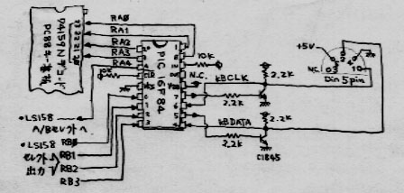

・テンキーの配置が変ですが、気にしないでください。
（気に入らない場合は好きなようにカスタマイズできます）
用意するもの： （１）ＰＩＣライター（秋月のキット（５７００円のやつ）が良い）自作も可能(ちょっとやばいかな？) （２）ＰＩＣ １６Ｆ８４ ・・・・・・１個（５００〜６００円くらい） （３）ＴＴＬ ７４ＬＳ１５８ ・・・・１個 （４）抵抗 2.2kΩ×4個,10kΩ×2個、2SCタイプの小型Tr２個. （５）ＤＩＮ５ピンオスコネクタ（サイズは互換機に合わせる） （６）最後に忘れてはならないのが、ジャンクのＰＣ８８０１キーボード.
・ＰＣ８８０１のキーボードケーブルから、７４１５９Ｎに接続されているセレクト信号線（４本）
は途中でパターンカットされています。（ケーブルをそのまま再利用して互換機に繋いでいる為）
・真ん中に張り付けになっているＴＴＬが７４ＬＳ１５８です。
あまり参考にならないかもしれません。
#ＭＯＤ ＣＨＩＰの貼紙は、御愛嬌ということで・・・
・実はこの「写真のようなもの」も、スキャナーの上にブツを置いて取り込んだ画像です。
#デジカメがなくても、結構代用がきくものである（笑）

#とりあえずソースのコメントを読んで作ってください(笑)
mpasmwin.exeは、MPLAB.に含まれています。
microchipのサイトか、秋月のライターを買うと付属しているＣＤＲＯＭから入手出来ます。
互換機でキーボードから送られてくるコードをダンプするツール
keyscan.zipの注意:
・Turbo-Cでコンパイルします。( _AXとか__int__(0x10)とかをふんだんに使っているため・・・ )
・ダンプツールは生ＤＯＳで起動してください。
・ダンプツール終了後は互換機をリセットしてください。
・トランジスタ技術９９年８月号
ＰＣ９８０１のキーボードを互換機に接続するアダプタの制作記事と、ＰＩＣソースがあります。
おまけリンク：
・Chip Directory（TTL ICのピン配列を忘れてしまったときはここへどうぞ：って、ふつーの人間は74LS***のピン廃なんて覚えてないはずだが・・・）
・まごの手本舗（ＰＣ９８＜−＞互換機のキーボードアダプタ等の制作）
|
|